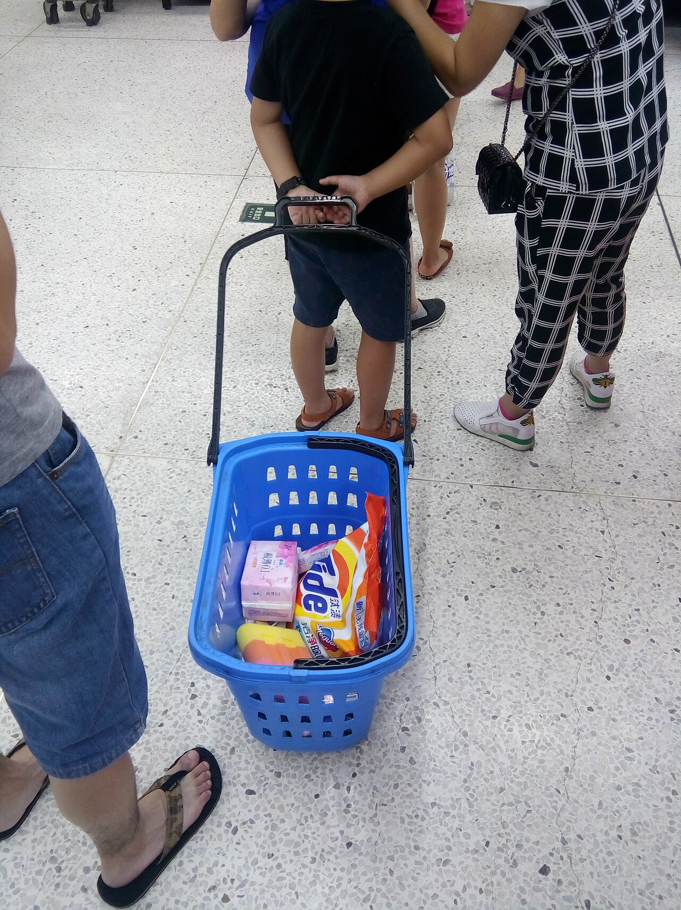

Pixels describe a scene. They do not determine its role.
Web image metadata must communicate not only what an image depicts, but why the image appears on a particular page. This working paper presents SEO Studio, a human-reviewed system for generating web image metadata with self-hosted multimodal models, page context, approved terminology, and a human-confirmed image purpose. The study separates visual-fact extraction from contextual writing and evaluates that decomposed pipeline against direct multimodal generation under controlled local-inference constraints. Completed compatibility evidence includes 100 outcomes across five deployed-stack model conditions and a separate 60-outcome current-generation amendment. Under the predeclared repair policy, Qwen3.5 9B and Gemma 3 12B reached the 95% pipeline-validity gate; the tested Gemma 4 12B condition reached 90% and was excluded from the primary quality screen. Human recalibration on 15 blinded items achieved 98.7% exact claim-label agreement (Cohen’s κ = 0.923) and 91.7% exact valid-output disposition agreement (linear-weighted κ = 0.860). These findings establish protocol feasibility rather than a quality winner. The primary grounding comparison, architecture ablation, context ablation, and final deployment decision remain pending.
Keywords: alternative text; multimodal models; local inference; image metadata; hallucination; human-in-the-loop evaluation
The same photograph can require three different answers.
Pixels establish what is visible. Placement and human-confirmed purpose determine what the website should communicate.
Human-confirmed purpose
Study-spaces article; surrounding text explains hours, not the scene.
Students work at tables in a library study area.
Describe the scene concisely because the photograph adds information.
Students work at tables in a library study area.alt=""Book a library study roomOne licensed benchmark image, three plausible page roles. The interaction makes the paper’s central construct visible without implying that any wording is a scored model result. Image: Gary Todd, CC0.
Each row contains 20 measured outcomes grouped by final state, not run order. Nineteen valid outcomes are required to pass. The marks show pipeline reliability only—not metadata quality or a generational model ranking.
Introduction
Images arrive as pixels, but websites publish them as decisions: filename, alternative text, caption, purpose, placement, and audience.
For content teams and web developers, preparing those decisions at scale is repetitive and error-prone. A generic captioning model can identify objects and actions, yet useful alternative text is not a caption detached from its page. A photograph may be informative in one placement, redundant in another, decorative in a third, or functional when it acts as a control. The same visible evidence can therefore require different metadata.
SEO Studio was developed as a capstone application for image preparation and web metadata review. The research extension turns that product into a controlled evaluation environment. It asks whether page context, human-confirmed purpose, and a decomposed vision-plus-writer architecture improve grounding and contextual usefulness without making deployment impractical on institutional hardware.
Self-hosting is relevant for organizations that wish to reduce third-party image transfer, control model versions, and inspect inference provenance. Cost was also a practical motivation for the project: processing large image collections through paid external APIs can accumulate image-, request-, and token-based charges, while the institution already has access to a DGX Spark. Local inference may avoid some external usage charges, but it is not cost-free: hardware acquisition or amortization, electricity, storage, maintenance, and operator time still matter. The system therefore treats privacy, security, accessibility, quality, and economic value as deployment boundaries to measure—not as benefits to assume.
Research questions
How accurately do the selected self-hosted multimodal models extract grounded and salient visual facts for web image metadata?
Does decomposing generation into visual-fact extraction and contextual writing reduce unsupported claims and improve metadata acceptability compared with direct generation using the same model?
How do brand context and page context affect contextual usefulness, terminology, redundancy, and unsupported claims?
What quality, reliability, latency, resource, and operational-cost trade-offs determine the most suitable deployment configuration for SEO Studio?
Contributions under evaluation
The intended contribution is a reproducible, task-specific framework rather than a claim that one model is universally best. If the completed evidence supports it, the study will contribute a licensed context-rich benchmark, a controlled local-model comparison, an architecture ablation, a context ablation, a provenance-preserving evaluation harness, and a human-review workflow for purpose-aware metadata. Claims will be limited to contributions actually completed and released.
Background and related work
Alternative text is contextual communication, not an inventory of everything visible.
The W3C image decision tree distinguishes informative, decorative, functional, text-containing, and complex image roles. That distinction matters because an empty alternative value can be correct, while a visually detailed description can be wrong when an image is decorative or repeats adjacent content. For functional imagery, the control’s action or destination can matter more than its appearance.
Prior work on context-sensitive image description has shown that surrounding language can influence which visual information is useful to communicate. Multimodal foundation models make this technically feasible, but they also introduce unsupported claims, sensitive inferences, inconsistent structured output, and prompt-dependent verbosity. Standard caption metrics are poorly matched to an open-ended task in which several descriptions may be acceptable and usefulness depends on placement.
This study therefore combines objective reliability evidence with blinded human judgment. It separates page and brand context from visible evidence, records failures in denominators, and treats model selection as a multi-objective deployment decision rather than a leaderboard.
Context may guide wording and purpose. It must never become proof that an object, identity, diagnosis, location, or outcome is visible.
SEO Studio system architecture
SEO Studio uses a Next.js frontend, a FastAPI backend, and Ollama-hosted local models. The research path is deliberately separate from mutable browser state: it sends source images to the inference runtime at execution time, stores only approved evidence and hashes, and produces blinded review packages outside the production workflow.
Evidence boundary
Brand profiles can supply approved terminology and tone. Page context can identify audience, placement, nearby text, and functional destination. Human-confirmed purpose determines whether alternative text should describe, identify, perform an action, refer to a long description, or remain empty. None of these inputs is allowed to manufacture visible facts.
Deployment boundary
Inference runs on an NVIDIA DGX Spark through Ollama. Every research record identifies the model digest, quantization, runtime version, code commit, prompt and schema hashes, image hash, generation options, native timing, and failure outcome. Live connection details remain outside the repository under the project’s dedicated operational access procedure.
Methodology
The protocol advances models by compatibility first, then quality, then deployment trade-offs.
Dataset and contexts
The pilot uses 20 licensed images spanning healthcare, retail, hospitality, education, and professional-service contexts. Every record includes source and licence evidence, visible-fact references, forbidden claims, a fictional page context, a brand profile, and a human-confirmed purpose. The full approximately 120-item dataset will be pilot-driven and frozen before primary execution.

Candidate screening
The deployed-stack pilot screened Qwen2.5-VL 3B, Qwen2.5-VL 32B, Qwen3.5 9B, Gemma 3 12B, and Mistral Small 3.1 24B. A later pre-freeze catalog correction tested Gemma 4 12B prospectively on an isolated current Ollama runtime. Compatibility is a hard gate: a condition must produce at least 19 valid outcomes from 20 under the frozen schema and bounded repair policy.
Temperature 0; seed 20260716; thinking disabled; structured JSON schema; one measured repeat for compatibility.
384-token one-shot limit; exactly one source-linked 768-token repair only after done_reason=length.
Timeouts, truncations, schema-invalid responses, transport attempts, and superseded recoveries remain in immutable records.
Baseline reference plus the two eligible challengers; no threshold reduction after outcomes are observed.
Primary quality outcomes
RQ1 prioritizes supported-claim precision and hallucinated-claim rate across the complete predeclared grounding population. RQ2 uses the binary grouping of accept unchanged or minor edit versus major edit or reject. RQ3 prioritizes contextual usefulness. RQ4 evaluates the quality–reliability–latency–cost Pareto position. Secondary dimensions include salient coverage, redundancy, brand alignment, purpose appropriateness, safety, concision, failure rate, throughput, and token counts.
Economic evaluation
The financial analysis will distinguish marginal operating cost on already-owned institutional hardware from total ownership cost. Observed run duration, throughput, token counts, storage, and—only if validated telemetry is available—energy use will support transparent workload scenarios. A dated API-price comparison may estimate avoided external inference charges at different image volumes, but it will not be presented as a universal saving or a causal cost result. Hardware amortization, maintenance, staff time, and utilization assumptions will be reported separately so that readers can replace them with their own institutional values.
Human review
Reviewers receive randomized packages that hide model, condition, author, and latency. They inspect the image, permitted context, confirmed purpose, and generated output. Claims are labelled as supported, unsupported, contradicted, or not verifiable from permitted evidence. Eight five-point dimensions and an overall disposition are recorded. System failures remain explicit rejects with null content ratings.
Statistical plan
The preferred analysis uses ordinal mixed-effects models for ratings and logistic mixed-effects models for binary failure and hallucination outcomes, with model or condition as fixed effects and image and reviewer as random effects. Bootstrap confidence intervals and corrected planned contrasts will accompany effect estimates. If the full mixed-effects plan is infeasible for the capstone, item-level Friedman and Holm-corrected paired Wilcoxon analyses are predeclared fallbacks.
Ethics and data handling
Only licensed public images and fictional contexts enter the released benchmark. Private client and brand documents are excluded. Reviewers must not infer identity, diagnosis, protected attributes, intent, or outcomes. The product always preserves a human approval step, and AI-assisted writing or coding will be disclosed according to institutional and venue policy.
Preliminary systems evidence
Compatibility answers “can this condition participate?” It does not answer “which model writes the best metadata?”
Deployed-stack pilot
The clean pilot completed 100 analyzed outcomes across five model conditions. Gemma 3 was the only challenger to meet the original one-shot 95% structured-validity threshold. The predeclared truncation policy subsequently repaired one of two Qwen3.5 truncations, bringing Qwen3.5 and Gemma 3 to 19/20 pipeline-valid outcomes. The Qwen2.5-VL 3B condition remains a below-gate reference rather than an eligible finalist.
* Gemma 4 was evaluated in a separate isolated-runtime amendment and is shown for protocol accounting, not as a same-runtime causal comparison.
| Condition | Block | One-shot valid | Repair | Pipeline valid | Gate | Remaining failure |
|---|---|---|---|---|---|---|
| Qwen2.5-VL 3B | Deployed | 16/20 | 0/4 | 16/20 | Fail · reference | 4 truncations |
| Qwen2.5-VL 32B | Deployed | 15/20 | 0/0 | 15/20 | Fail | 5 timeouts |
| Qwen3.5 9B | Deployed | 18/20 | 1/2 | 19/20 | Pass | 1 truncation |
| Gemma 3 12B | Deployed | 19/20 | 0/1 | 19/20 | Pass | 1 truncation |
| Mistral Small 3.1 24B | Deployed | 17/20 | 0/0 | 17/20 | Fail | 3 timeouts |
| Gemma 4 12B | Isolated amendment | 17/20 | 1/3 | 18/20 | Fail | 2 truncations |
Gemma generation boundary
The Gemma 4 amendment corrected an initial candidate-selection limitation. Its output failures were genuine under the frozen contract, but the amendment does not establish that Gemma 4 is generally inferior to Gemma 3. The generations ran in different Ollama runtime blocks, the visual-facts schema did not cap array length, and the prompt did not prohibit coordinate-style grounding strings or repeated object enumeration. The defensible conclusion is narrower: the tested Gemma 4 package failed this pipeline’s compatibility threshold and therefore did not enter the primary quality screen.
Human calibration
Two reviewers independently labelled the same 76-claim inventory across 15 blinded calibration items; an adjudicated record was preserved separately. Twelve items contained metadata and three were explicit system failures. The recalibration established reviewer feasibility without opening the private model map.
Cohen’s κ = 0.923
κw = 0.860
for both reviewers
Exact agreement was at least 83.3% for seven of eight ordinal dimensions and 100% for brand alignment and safety. Purpose-appropriateness exact agreement was 66.7%, with linear-weighted κ = 0.742. Kappa was undefined for safety because both reviewers used the same category throughout, and was prevalence-sensitive for concision despite 91.7% exact agreement.
Primary results
Reserved for frozen evidence
The primary study has not been completed. This section will be generated from normalized evidence and will report:
- supported-claim precision and hallucinated-claim rate by model;
- direct versus decomposed architecture disposition;
- page-context and brand-context effects on contextual usefulness;
- quality, reliability, latency, resource, and operational-cost Pareto position;
- planned contrasts, effect sizes, uncertainty, and agreement;
- the final deployment decision under the frozen advancement rule.
No compatibility percentage is treated as a quality score. No calibration output is used to choose a model. No final result will be selected because it looks favourable.
Discussion
The completed evidence already shows why model selection is a systems decision; it does not yet show which eligible pipeline produces the most useful metadata.
The compatibility pilots exposed qualitatively different failure modes: output truncation in smaller and newer multimodal packages, timeouts in larger conditions, and sensitivity to unbounded structured arrays. These outcomes matter operationally because a model that produces excellent text only intermittently may be unsuitable for a review workflow. They also demonstrate that package identity, runtime version, context window, output limits, and repair policy are part of the evaluated condition.
The calibration results support the feasibility of blinded human review. They also caution against interpreting kappa without exact agreement and category prevalence. The primary study must therefore report both agreement statistics and rating distributions.
Interpretation of the central hypothesis is deferred. The study will not claim that context or decomposition improves metadata unless the predeclared outcomes and uncertainty estimates support that conclusion. Null or negative findings will be reported directly.
Threats to validity
Internal validity
Model families differ in training, package implementation, quantization, and runtime requirements. The Gemma 4 amendment used a different Ollama block from the deployed-stack comparison and cannot support a clean generational causal claim. Prompt and schema choices may interact with model-specific output behaviour. Temperature zero does not guarantee determinism, and shared hardware load may affect latency.
Construct validity
Alternative text has no single correct wording. Human ratings approximate usefulness under a supplied purpose and context but do not replace evaluation by blind or low-vision users. Compatibility and schema validity are not quality. Reference descriptions are aids, not ground truth.
External validity
The benchmark emphasizes English-language Canadian business-web contexts and a limited domain set. Findings may not generalize to other languages, cultures, art styles, charts, scientific imagery, social media, or enterprise production loads.
Researcher effects
Project contributors may also participate as reviewers. Blinding, randomized order, preserved individual records, explicit adjudication, and disclosure reduce but do not eliminate author-rater bias.
Responsible use, ethics, and privacy
SEO Studio is an assistive authoring system. A person confirms image purpose, reviews generated metadata, and may edit or reject every output before export. The model is not described as understanding accessibility, and the software is not described as WCAG compliant.
The evaluation forbids unsupported identity, diagnosis, protected-attribute, intent, and outcome claims. Empty alternative text remains an available and sometimes correct decision. Private brand or client materials do not enter the public benchmark.
Self-hosted inference can reduce third-party transfer, but privacy also depends on network exposure, access control, logging, retention, and operational practice. The paper will document those controls rather than treating locality as a guarantee.
Limitations and future work
Future work includes additional languages and cultural contexts, participation by blind and low-vision evaluators under separately approved ethics procedures, CMS-integrated page studies, validated energy measurement, broader runtime comparisons, and larger context-aware benchmarks.
AI crop targeting remains outside the primary paper. Purpose suggestion is a product feature and exploratory research direction, not a primary outcome. A same-runtime Gemma 3 versus Gemma 4 sensitivity study could clarify the candidate-amendment result, but it is not required to preserve the current compatibility decision.
Interim conclusion
The study infrastructure is ready to ask the quality questions honestly; it has not answered them yet.
SEO Studio now has a provenance-preserving evaluation harness, a controlled compatibility screen, an explicit repair policy, a defensible deployed-stack finalist set, and a calibrated blinded-review process. Preliminary evidence supports proceeding to the primary quality study. It does not support naming a best model, claiming an accessibility improvement, or preferring direct or decomposed generation.
The final conclusion will answer each research question from the frozen analysis and identify the deployment configuration selected for SEO Studio. Until then, this manuscript remains a transparent working paper.
Required end matter
Contributor roles and author order are pending a documented team agreement. The software will not be represented as solely built by the lead author.
Institutional NVIDIA DGX Spark compute was provided under the supervision of the project coordinator. No external model API was required for the reported local runs.
The intended release includes licensed images or source links, fictional contexts, manifests, prompts, schemas, normalized evidence, and attribution records, subject to institutional approval.
Evaluation code is maintained in the SEO Studio repository. Release commit, archive URL, and persistent identifier will be added at submission.
Course/institutional ethics determination and any exemption reference remain to be recorded before submission.
AI tools assisted with software development, evidence review, and manuscript drafting. Human authors remain responsible for verification, interpretation, authorship, and the submitted text.
No conflict-of-interest statement has yet been finalized.
Working references
- World Wide Web Consortium. “An alt Decision Tree.” WAI Images Tutorial.
- Kreiss, E., et al. “Context Matters for Image Descriptions for Accessibility.” arXiv:2205.10646.
- Ollama. “Generate a response,” “Structured Outputs,” and “Vision.” Official documentation.
- NVIDIA. “DGX Spark Hardware.” Product documentation.
- NISO. “CRediT — Contributor Roles Taxonomy.” credit.niso.org.
- Conestoga College. “Research Policy” and “Policy on Students’ Rights in Research.” Institutional policy documents.
- SEO Studio Project Team. Research Master Architecture and Execution Plan, version 2.1. Internal protocol document, 2026.
- Hohman, F., Conlen, M., Heer, J., and Chau, D. H. P. “Communicating with Interactive Articles.” Distill, 2020.
- Nature. “Preparing figures—our specifications.” Nature Research Figure Guide.
- Elsevier. “Graphical abstract.” Author tools and resources.
- Observable. “Observable Plot.” Open-source grammar of graphics for exploratory visualization.
- Vega Project. “Vega-Lite.” A grammar of interactive graphics.
Reproducibility map
Licensed manifest · hashes, contexts, purpose, attribution, and forbidden claims